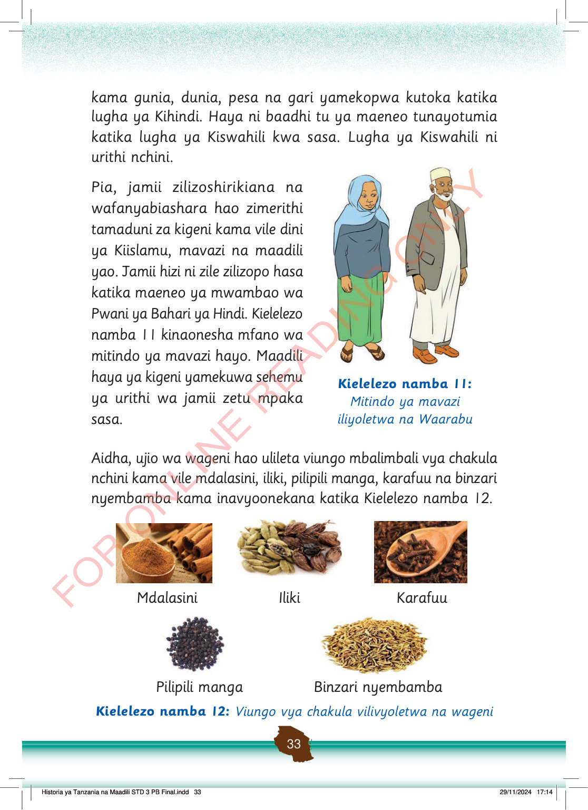

kama gunia, dunia, pesa na gari yamekopwa kutoka katika lugha ya Kihindi.
Haya ni baadhi tu ya maeneo tunayotumia katika lugha ya Kiswahili kwa sasa.
Lugha ya Kiswahili ni urithi nchini.
Pia, jamii zilizoshirikiana na wafanyabiashara hao zimerithi tamaduni za kigeni kama vile dini ya Kiislamu, mavazi na maadili yao.
Jamii hizi ni zile zilizopo hasa katika maeneo ya mwambao wa Pwani ya Bahari ya Hindi.
Kielelezo namba 11 kinaonesha mfano wa mitindo ya mavazi hayo.
Maadili haya ya kigeni yamekuwa sehemu ya urithi wa jamii zetu mpaka sasa.
Mwanamke na mwanaume wamesimama wakiwa wamevaa mavazi ya asili ya Kiislamu na Kiarabu.
Kielelezo namba 11:
Mitindo ya mavazi iliyyoletwa na Waarabu
Aidha, ujio wa wageni hao ulileta viungo mbalimbali vya chakula nchini kama vile mdalasini, iliki, pilipili manga, karafuu na binzari nyembamba kama inavyoonekana katika Kielelezo namba 12.
Mdalasini wa unga kwenye kijiko pamoja na vijiti vya mdalasini.
Mdalasini
Punje za iliki za kijani na za kahawia.
Iliki
Karafuu zikiwa kwenye kijiko cha mbao.
Karafuu
Punje nyingi za pilipili manga nyeusi.
Pilipili manga
Rundo la binzari nyembamba za rangi ya kahawia.
Binzari nyembamba
Kielelezo namba 12: Viungo vya chakula vilivyoletwa na wageni